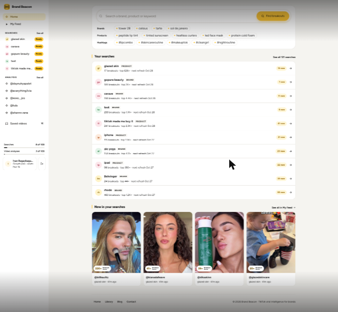
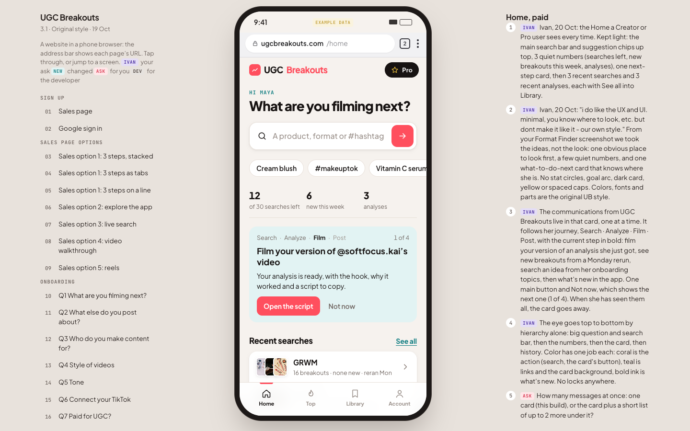
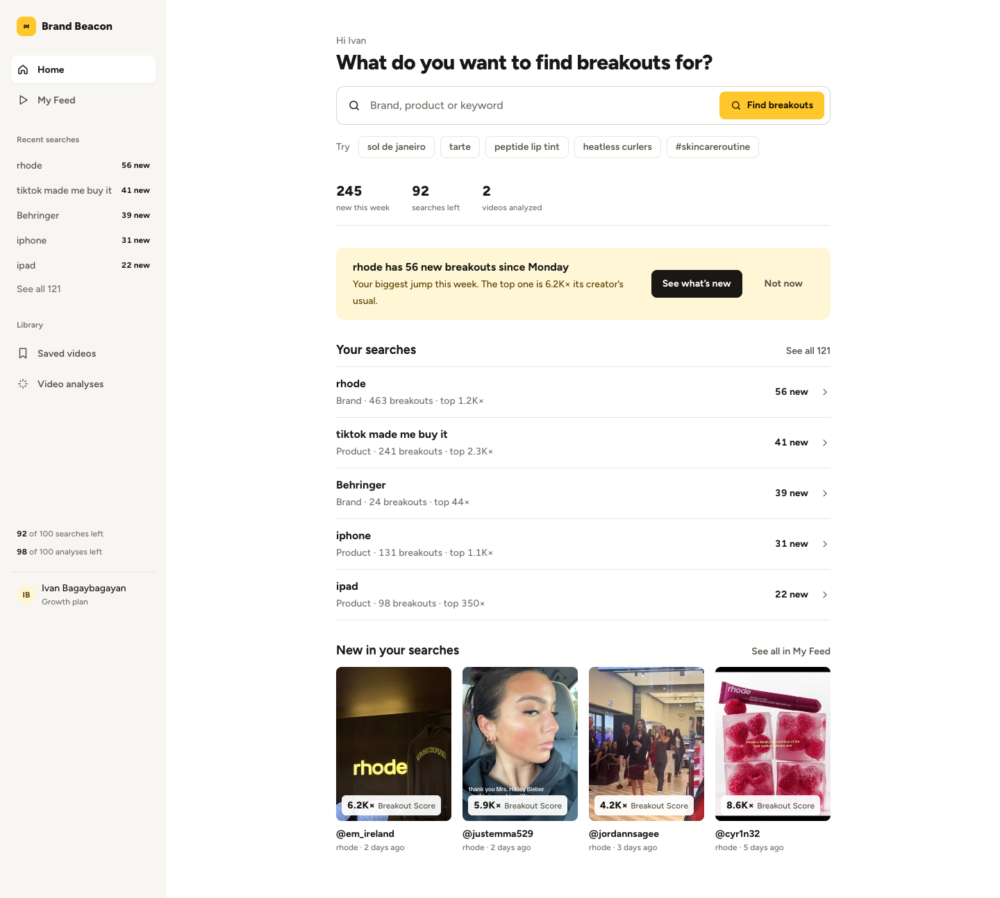
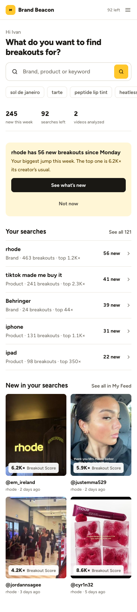
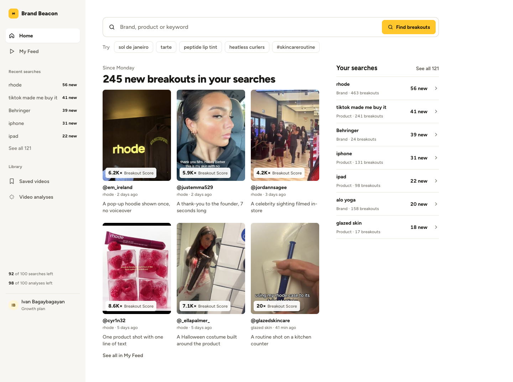
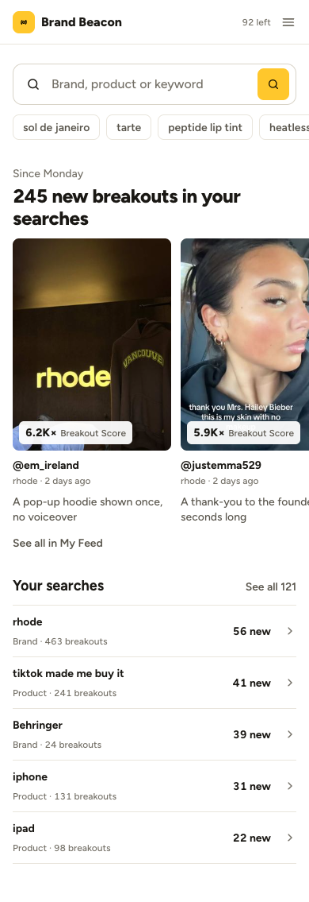
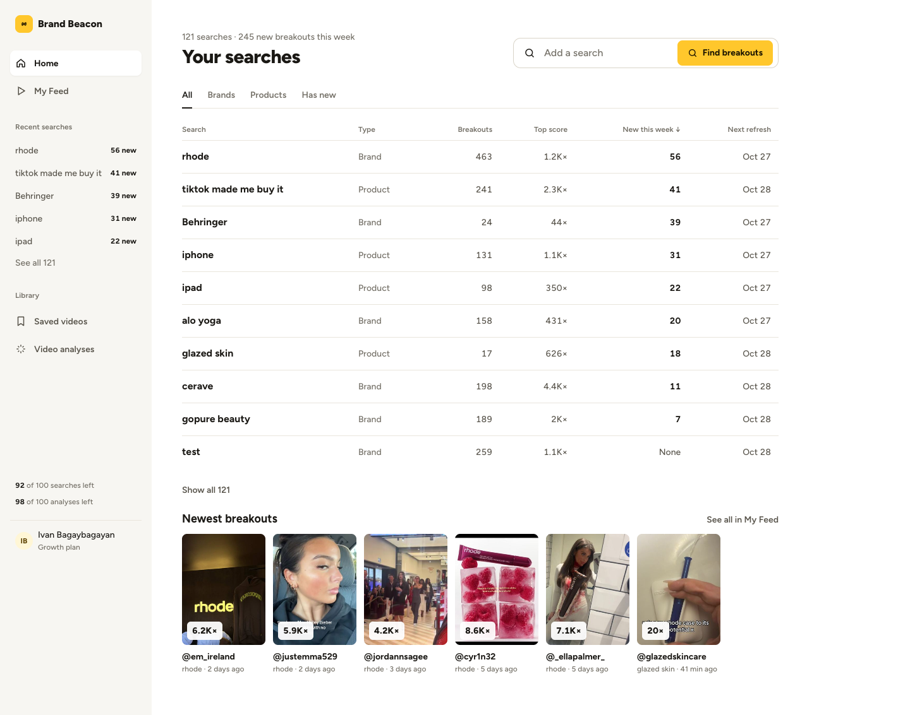
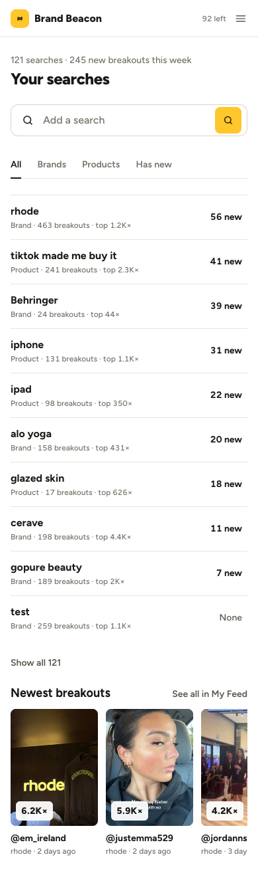

Three ways to make the logged-in Home easier to look at, using the spacing and hierarchy from UGC Breakouts 3.1 while keeping BrandBeacon's own look. Everything is local and nothing has gone to Ivan or Lester yet.
Ivan, 22 Oct (Slack): “with the latest UGC B, and the spacing, making things look UX/UI, i'd like to give the home screen of BB a new refresh... it's not easy to look at, pretty to look at”
From Ivan's screenshot of his own account. Every block on the page is useful. The trouble is that they all get the same weight, so the eye has nowhere to land.

Live, Ivan's account, 22 Oct.
Ivan said UB 3.1 “looks great” (19 Oct) and liked the Home, paid layout: “minimal, you know where to look” (20 Oct). These are the parts that make it easy to read. The colors and fonts stay UB's.

UB 3.1, Home, paid (page 29).
Give BB the same reading order Ivan liked on UB: a question, the search bar, three numbers, one next step, then five searches and four new breakouts.


One centered column, 712px wide. The 15 chips become 5 in one row. The 10 search rows become 5, sorted by most new. A new card points at the search with the biggest jump this week, with one button and Not now, the same pattern as UB's Home, paid.
Only 5 of Ivan's 121 searches show on Home. People who track many brands go to See all every time. The next-step card needs rules for which message to show, as on UB.
The reason to come back is new videos, so lead with them. The headline is the count of new breakouts, the videos take the wide column, and the searches sit in a narrow column on the right.


Search bar on top at full width, then six bigger video cards, each with one line on why it broke out. Your searches becomes a compact list beside them. On phone, the videos scroll sideways and the list follows.
The “why it worked” line under each card doesn't exist in the app today (SAMPLE copy). It needs an analysis or a short generated line per video. Without it the cards are only thumbnails, which is My Feed again.
Ivan's account has 121 searches, and agencies track many brands at once. A sortable table handles that where rows can't.


The page is Your searches. Columns for type, breakouts, top score, new this week (sorted) and next refresh, with All, Brands, Products and Has new tabs. The search bar becomes “Add a search” in the header. A strip of the newest breakouts sits under the table.
It reads like a tool, and a new Free account with one or two searches gets a near-empty table. It would need its own state for new accounts (the 3.0 Get started steps).
A is the change Ivan asked for: the UB 3.1 spacing and reading order on BB's own look. It keeps every 3.0 decision Lester already has (search, Your searches, New in your searches), so the build is a restyle plus one new card rather than a new page. C's table solves a real problem for heavy accounts like Ivan's, so it fits best behind “See all 121” instead of on Home.